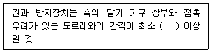
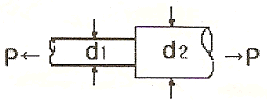
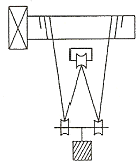
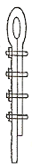
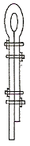
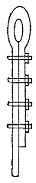
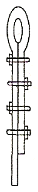

타워크레인운전기능사 (2008-07-13 기출문제)
1과목: 타워크레인 구조 및 기능일반
1. 권과 방지장치의 다음 설명 중 ( )안에 알맞은 것은?

- 10cm
- 15cm
- 25cm
- 30cm
(정답률: 56%)

2. 동절기에 기초 앵커를 설치할 경우 콘크리트 타설 작업 후 일반적으로 콘크리트의 양생 기간으로 가장 적절한 것은?
- 1일 이상
- 3일 이상
- 5일 이상
- 10일 이상
(정답률: 84%)
3. 대지전압 150V 이하인 경우 배선용 절연저항으로 맞는 것은?
- 1.0Ω
- 0.5Ω
- 0.3Ω
- 0.1Ω
(정답률: 44%)
4. 유압 펌프의 고장현상이 아닌 것은?
- 전동모터의 체결볼트 일부가 이완되었다
- 오일이 토출되지 않는다
- 이상소음이 난다
- 유량과 압력이 부족하다
(정답률: 80%)
5. 저항이 10Ω일 경우 100V의 전압을 가할 때 흐르는 전류는?
- 0.1A
- 10A
- 100A
- 1000A
(정답률: 75%)
6. 타워크레인의 접지설비에서 전압이 400V를 초과할 때 전동기 외함의 접지저항은 얼마 이하이어야 하는가?
- 10Ω
- 20Ω
- 30Ω
- 50Ω
(정답률: 65%)
7. 타워크레인의 전동기, 제어반, 리미트스위치, 과부하방지장치 등의 외함 구조는 방수 및 방진에 대하여 IP규격이 얼마 이상이어야 하는가?
- IP10
- IP11
- IP54
- IP67
(정답률: 76%)
8. 타워크레인의 방호장치 종류가 아닌 것은?
- 권상 및 권하 방지장치
- 풍압 방지장치
- 과부하 방지장치
- 훅 해지장치
(정답률: 60%)
9. 유압장치의 기본적인 제어밸브 3요소가 아닌 것은?
- 압력 제어 밸브
- 방향 제어 밸브
- 유량 제어 밸브
- 가속도 제어 밸브
(정답률: 79%)
10. 타워크레인의 텔레스코핑 작업 전 유압장치 점검 사항이 아닌 것은?
- 유압 탱크의 오일레벨을 점검한다
- 유압모터의 회전 방향을 점검한다
- 유압펌프의 작동압력을 점검한다
- 유압장치의 자중을 점검한다
(정답률: 77%)
11. 타워크레인 구조에서 기초 앵커 위쪽으로부터 운전실 아래까지의 구간에 위치하고 있지 않는 구조는?
- 베이직 마스트
- 카운터 지브
- 타워 마스트
- 텔레스코핑 케이지
(정답률: 68%)
12. 타워크레인의 트롤리에 관련되 안전장치가 아닌 것은?
- 와이어로프 고임 방지장치
- 트롤리 정지장치
- 트롤리 로프 안전장치
- 트롤리 내·외측 제한장치
(정답률: 79%)
13. 고정식 지브형 타워크레인이 할 수 있는 동작으로 틀린 것은?
- 권상(하)동작
- 주행동작
- 기복동작
- 선회동작
(정답률: 71%)
14. 그림과 같은 둥근 막대에 인장하중 P 를 가했을 때 d1 : d2 의 직경의 비가 1:2이면, d1과 d2에 생기는 응력의 비는?

- 1:2
- 3:1
- 4:1
- 8:1
(정답률: 60%)
15. 선회속도가 0.81rev/min으로 표시되었다. 올바른 설명은?
- 타워크레인 선회속도는 1분당 0.81m이다
- 타워크레인 선회속도는 1분당 0.81cm이다
- 타워크레인 선회속도는 1분당 0.81회전이다
- 타워크레인 선회속도는 1선회 시 0.81분 걸린다
(정답률: 77%)
16. 지브가 기복하는 장치를 갖는 크레인 등은 운전자가 보기쉬운 위치에 당해 지브의 ( )지시장치를 구비하여야 한다. ( )안에 들어갈 내용으로 적합한 것은?
- 거리
- 하중
- 속도
- 경사각
(정답률: 72%)
17. 전기에서 과전류 차단기의 종류가 아닌 것은?
- 퓨즈(Fuse)
- 배선용 차단기
- 누전 차단기(과전류차단 겸용인 경우)
- 저항기
(정답률: 73%)
18. 고장력볼트 머리의 문자, 숫자는 무엇을 나타내는가?
- 볼트의 기계적 성질에 따른 강도를 표시한 것이다
- 볼트의 길이를 표시한 것이다
- 볼트의 재질을 표시한 것이다
- 볼트의 모양을 표시한 것이다
(정답률: 78%)
19. 권상장치의 와이어드럼에 와이어로프가 감길 때 홈이 없는 경우 후리트(Fleet) 허용각도는?
- 4도 이내
- 3도 이내
- 2도 이내
- 1도 이내
(정답률: 56%)
20. 인터록 장치를 설치하는 목적으로 맞는 것은?
- 서로 상반되는 동작이 동시에 동작되지 않도록 하기 위하여
- 전기스파크의 발생을 방지하기 위하여
- 전자접속 용량을 조절하기 위하여
- 전원을 안정적으로 공급하기 위하여
(정답률: 75%)
2과목: 양중작업 일반
21. 크레인 운전자의 의무사항으로 볼 수 없는 것은?
- 재해방지를 위해 크레인 사용 전 점검
- 장비에 특이사항이 있을시 교대자에게 설명
- 기어박스의 오일량 및 마모기어의 정비
- 안전운전에 영향을 미칠 결함 발견 시 작업중지
(정답률: 89%)
22. 타워크레인 훅으로 상승작업 중 하물의 낙하가 발생하였다. 그 원인과 거리가 가장 먼 것은?
- 줄걸이 상태불량
- 권상용 와이어로프의 절단
- 지브와 달기기구의 충돌
- 텔레스코핑시 상부의 불균형
(정답률: 78%)
23. 트롤리의 기능을 옳게 설명한 것은?
- 와이어로프에 매달리어 권상작업을 한다
- 카운터지브에 설치되어 균형유지를 하여준다
- 메인지브에서 전후 이동하며 작업반경을 결정하는 횡행장치이다
- 마스트의 높이를 높이는 유압구동장치이다
(정답률: 84%)
24. 운전자가 손바닥을 안으로 하여 얼굴 앞에서 2~3회 흔드는 신호는?
- 작업 완료
- 신호불명
- 줄걸이 작업미비
- 기중기 이상발생
(정답률: 74%)
25. 2대 이상이 근접하여 설치된 타워크레인에서 하물을 운반할 때 운전시 가장 주의하여야 할 동작은?
- 권상동작
- 권하동작
- 선회동작
- 트롤리 이동 동작
(정답률: 90%)
26. 신호수의 준수사항으로 부적합한 것은?
- 신수호는 지정된 신호방법으로 신호한다.
- 두 대의 타워크레인으로 동시 작업시 두 사람의 신호수가 동시에 신호한다.
- 신호수는 그 자신이 신호수로 구별될 수 있도록 눈에 잘 띄는 표시를 한다.
- 신호장비는 밝은 색상이며 신호수에게만 적용되는 특수색상으로 한다.
(정답률: 94%)
27. 타워크레인 정격하중의 의미로서 가장 적합한 것은?
- 훅 및 달기기구의 중량을 포함하여 타워크레인이 들어올릴 수 있는 최대 하중
- 훅 및 달기기구의 중량을 제외한 타워크레인이 들어올릴 수 있는 최대 하중
- 평상시 주로 취급하는 하물의 하중
- 훅의 중량을 포함한 타워크레인이 들어올릴 수 있는 최대하중
(정답률: 66%)
28. 기복(Luffing)하는 타워크레인의 지브(Jib 또는 Boom)를 위로 올리고자 수신호 할 때의 신호방법으로 적합한 것은?
- 팔을 펴 엄지손가락을 위로 향하게 한다.
- 팔을 펴 엄지손가락을 아래로 향하게 한다.
- 두 주먹을 몸 허리에 놓고 두 엄지손가락을 서로 안으로 마주보게 한다.
- 두 주먹을 몸 허리에 놓고 두 엄지손가락을 밖으로 향하게 한다.
(정답률: 89%)
29. 타워크레인의 정상운전 작업으로 맞는 것은?
- 하중의 끌어당김 작업
- 박힌 하중 인양작업
- 최대 하강속도로 내림 작업
- 작업 반경 밖으로 내려놓기 위한 흔들기 작업
(정답률: 48%)
30. 타워크레인의 양장작업 보조용구로 사용하는 클립(clip)체결 방법이 틀린 것은?
- 클립의 새들은 로프에 힘이 걸리는 쪽에 있을 것
- 클립의 간격은 로프 직경의 6배 이상으로 할 것
- 클립 수는 로프 직경에 따라 다르지만, 최소 2개 이상으로 할 것
- 가능한 딤불(thimble)을 부착할 것
(정답률: 46%)
31. 와이어로프 줄걸이 작업자가 작업을 실시할 때 고려 해야 할 사항과 가장 거리가 먼 것은?
- 짐의 중량
- 짐의 중심
- 짐의 부피
- 짐을 매는 방법
(정답률: 74%)
32. 동일조건에서 2줄 걸기 작업의 줄걸이 각도 α 중 로프에 장력이 가장 크게 걸리는 각도는?
- α = 30° 일 때
- α = 60° 일 때
- α = 90° 일 때
- α = 120° 일 때
(정답률: 63%)
33. 와이어로프의 심강을 3가지 종류로 구분한 것은?
- 섬유심, 공심, 와이어심
- 철심, 동심, 아연심
- 섬유심, 랭심, 동심
- 와이어심, 아연심, 랭심
(정답률: 82%)
34. 그림에서 240톤의 부하물을 들어 올리려 할 때 당기는 힘은 몇 톤인가? (단, 마찰계수 및 각종효율은 무시함)

- 80톤
- 60톤
- 120톤
- 240톤
(정답률: 68%)
35. 국내 타워크레인 안전 및 검사기준상 권상용 와이어로프의 안전율은?
- 4.0
- 5.0
- 6.0
- 7.0
(정답률: 66%)
36. 클립(clip) 고정이 가장 적합하게 된 것은?




(정답률: 73%)
37. 와이어로프(wire rope)의 마모한도에 따른 교환기준을 설명한 것으로 맞는 것은?
- 킹크(kink)가 발생한 경우
- 로프에 그리스가 많이 발라진 경우
- 마모로 직경의 감소가 공칭 직경의 3% 이상인 경우
- 로프의 한 꼬임(스트랜드를 의미) 사이에서 소선수의 7% 이상 소선이 절단된 경우
(정답률: 52%)
38. 권상장치 등의 드럼에 홈이 있는 경우와 홈이 없는 경우의 후리트(fleet) 각도(와이어로프가 감기는 방향과 로프가 감겨지는 방향과의 각도)를 옳게 설명한 것은?
- 홈이 있는 경우 10° 이내, 홈이 없는 경우 5° 이내이다
- 홈이 있는 경우 5° 이내, 홈이 없는 경우 10° 이내이다
- 홈이 있는 경우 4° 이내, 홈이 없는 경우 2° 이내이다
- 홈이 있는 경우 2° 이내, 홈이 없는 경우 4° 이내이다
(정답률: 48%)
39. 크레인에서 리미트 스위치의 전동에 쓰이는 일반적인 체인은?
- 롤러 체인
- 롱 링크 체인
- 숏 링크 체인
- 스타트 체인
(정답률: 68%)
40. 크레인 신호 중 한 손을 들어올려 주먹을 쥐는 신호는?
- 정지
- 비상정지
- 작업완료
- 위로 올리기
(정답률: 92%)
3과목: 타워크레인 설치.해체 일반
41. 건설현장에서 타워크레인의 설치, 해체 작업시 안전대책이 아닌 것은?
- 지휘계통의 명확화
- 추락재해 방지
- 풍속의 확인
- 크레인 성능과 디자인
(정답률: 94%)
42. 타워크레인 메인지브(앞 지브)의 절손 원인으로 가장 적합한 것은?
- 호이스트 모터의 소손
- 트롤리로프의 파단
- 정격하중의 과부하
- 슬로잉 모터 소손
(정답률: 83%)
43. 타워크레인을 사용할 장소에 설치하고, 관련법에 의해 실시하는 검사는?
- 성능검사
- 완성검사
- 설계검사
- Q.C검사
(정답률: 64%)
44. 타워크레인 설치시 서로 조립되는 것 중 틀린 것은?
- 베이직 마스트 - 기초 앵커
- 카운터 지브 - 권상장치
- 균형추 - 타워헤드
- 메인 지브 - 트롤리장치 및 타이바
(정답률: 50%)
45. 고장력 볼트 또는 핀 체결 부분이 아닌 것은?
- 슬루잉 플랫폼 - 볼 슬루잉 링
- 볼 슬루잉 링 - 슬루잉 링 서포트
- 볼 슬루잉 서포트 - 타워마스트
- 기초앵커 고정 - 기초앵커
(정답률: 50%)
46. 고장력 볼트의 조임 토크 값의 단위는?
- ㎏/m3
- ㎏f
- kN
- ㎏f-m
(정답률: 57%)
47. 마스트를 분리한 후 가장 올바른 하강 운전방법은?
- 지상 바닥에 고속으로 내린다.
- 지상 바닥에 중속으로 스윙하면서 내린다.
- 바닥에 긴급히 내린다.
- 바닥에 놓기 전 일단 정지 후, 저속으로 내린다.
(정답률: 94%)
48. 텔레스코핑(상승작업)시 관련 설명으로 틀린 것은?
- 마스트 기둥과 가이드 롤러 사이에는 적정 간격이 필요하다.
- 텔레스코핑(상승작업)전 지브와 카운터 지브가 45도 각도를 유지한 상태에서 트롤리를 움직여야 한다.
- 가이드 슈를 고정했다면 크레인을 움직이지 않는다
- 텔레스코핑(사승작업)전 반드시 좌·우 평형상태를 이루어야 한다
(정답률: 77%)
49. 마스트 연장 작업에서 메인 지브와 카운터 지브의 균형 유지 방법이 옳은 것은?
- 작업 전 주행레일을 조정하여 균형을 유지한다.
- 작업시 권상작업을 통하여 균형을 유지한다.
- 작업시 선회작업을 통하여 균형을 유지한다.
- 작업 전 하중을 인양하여 트롤리의 위치를 조정하면서 균형을 유지한다.
(정답률: 64%)
50. 타워크레인 설치 시 상호 체결 부분에 해당하는 곳으로 옳은 것은?
- 슬루잉 플랫 폼 - 기초 앵커
- 타워 마스트 - 타워헤드
- 타워 베이직 마스트 - 기초 앵커
- 기초 앵커 - 카운터 지브
(정답률: 50%)
51. 산업재해의 분류에서 사람이 평면상으로 넘어졌을 때(미끄러짐 포함)를 말하는 것은?
- 낙하
- 충돌
- 전도
- 추락
(정답률: 84%)
52. 전기 기기에 의한 감전 사고를 막기 위하여 필요한 설비로 가장 중요한 것은?
- 고압계 설비
- 접지 설비
- 방폭등 설비
- 대지 전위 상승장치 설비
(정답률: 86%)
53. 전기장치에 관한 설명으로 틀린 것은?
- 계기 사용시는 최대 측정범위를 초과해서 사용하지 말아야 한다.
- 전류계는 부하에 병렬로 접속해야 한다.
- 축전지 전원 결선시는 합선되지 않도록 유의해야 한다.
- 절연된 전극이 접지되지 않도록 하여야 한다.
(정답률: 68%)
54. 수공구 취급시 안전에 관한 사항으로 틀린 것은?
- 해머자루의 해머고정 부분 끝에 쐐기를 박아 사용중 해머가 빠지지 않도록 한다.
- 렌치 사용시 본인의 몸쪽으로 당기지 않는다.
- 스크루 드라이버 사용시 공작물을 손으로 잡지 않는다.
- 스크레이퍼 사용시 공작물을 손으로 잡지 않는다.
(정답률: 81%)
55. 안전한 작업을 위해 보안경을 착용하여야 하는 작업은?
- 엔진 오일 보충 및 냉각수 점검작업
- 제동등 작동 점검 시
- 장비의 하체 점검작업
- 전기저항 측정 및 배선 점검 작업
(정답률: 65%)
56. 안전작업 사항으로 잘못된 것은?
- 전기장치는 접지를 하고, 이동식 전기기구는 방호장치를 한다.
- 엔진에서 배출되는 일산화탄소에 대비한 통풍 장치를 설치한다.
- 담뱃불은 발화력이 약하므로 제한 장소 없이 흡연해도 무방하다.
- 주요 장비 등은 조작자를 지정하여 누구나 조작하지 않도록 한다.
(정답률: 89%)
57. 작업장에서 공동 작업으로 물건을 들어 이동할 때 잘못된 것은?
- 힘의 균형을 유지하여 이동 할 것
- 불안전한 물건은 드는 방법에 주의할 것
- 보조를 맞추어 들도록 할 것
- 운반도중 상대방에게 무리하게 힘을 가할 것
(정답률: 93%)
58. 작업장의 안전수칙 중 틀린 것은?
- 공구는 오래 사용하기 위하여 기름을 묻혀서 사용한다.
- 작업복과 안전장구는 반드시 착용한다.
- 각종기계를 불필요하게 공회전 시키지 않는다.
- 기계의 청소나 손질은 운전을 정지 시킨 후 실시한다
(정답률: 92%)
59. 작업현장에서 사용되는 안전표지 색으로 잘못 짝지어진 것은?
- 빨간색 - 방화 표시
- 노란색 - 충돌·추락 주의 표시
- 녹색 - 비상구 표시
- 보라색 - 안전지도 표시
(정답률: 80%)
60. 재해 발생 원인으로 가장 높은 비율을 차지하는 것은?
- 사회적 환경
- 불안전한 작업환경
- 작업자의 성격적 결함
- 작업자의 불안전한 행동
(정답률: 57%)